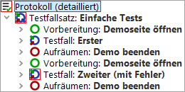

| Version 6.0.3 |
Nachdem wir uns Schritt für Schritt durch den Testfallsatz gearbeitet haben, wollen wir nun alles in einem Rutsch ausführen.
Der Testlauf endet mit dem bekannten Fehler.
|
|  | ||
|
| Abbildung 10.16: Das Protokoll des gesamten Testfallsatzes | ||
Man sieht, dass die Vorbereitungs- und Aufräumenknoten vor bzw. nach jedem Testfall ausgeführt werden. Dies ist eine Eigenschaft, die diese im Zusammenspiel mit einem Testfallsatzknoten entwickeln. Dadurch wird für jeden Testfall immer ein sauberer Ausgangszustand hergestellt.
Hinweis Das SUT nach jedem Testfall zu beenden ist nicht die eleganteste Art, einen sauberen Ausgangszustand zu erreichen. Elegantere Wege zur Herstellung einer definierten Testausgangssituation und Durchführung der notwendigen Aufräumarbeiten werden in Kapitel (Kapitel 29) dieses Tutorials erklärt.
| Letzte Änderung: 6.9.2022 Copyright © 2002-2022 Quality First Software GmbH |